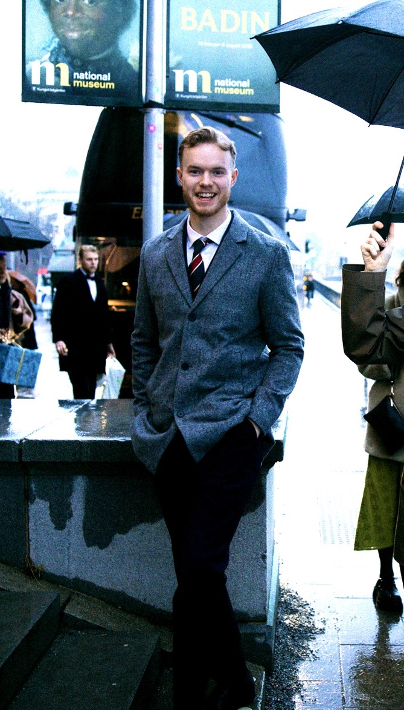
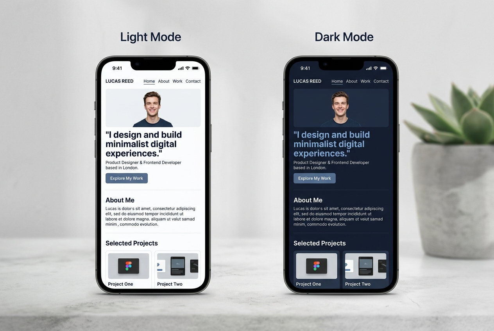

2026 — pågående
Digital Marketing Specialist
IHM Business School · Göteborg
En praktiskt inriktad utbildning inom digital marknadsföring, strategi, analys och arbete med digitala kanaler.
IHM Business School · Göteborg
Jag heter Nicolas och studerar Digital Marketing Specialist. Jag är nyfiken på hur insikter om människor och beteenden kan bli relevant kommunikation och genomtänkt marknadsföring.

01 / Bakgrund
Jag är särskilt intresserad av hur marknadsföring, psykologi och beteendeekonomi samspelar.
Innan jag började studera digital marknadsföring läste jag psykologi och beteendeekonomi samt arbetsvetarprogrammet. Vid sidan av studierna arbetar jag som Office Manager på Dassault Systèmes.
Den kombinationen har väckt mitt intresse för hur vi kommunicerar, fattar beslut och bygger relationer — och hur den förståelsen kan användas i marknadsföring.
02 / Lärande
IHM Business School · Göteborg
En praktiskt inriktad utbildning inom digital marknadsföring, strategi, analys och arbete med digitala kanaler.
Mitt eget projekt
Jag bygger vidare på den här webbplatsen och lär mig hur HTML, CSS och JavaScript används för att skapa struktur, utseende och funktion.
Studerar inom utbildningen
Områden som ingår i utbildningens fokus. Jag bygger kunskap och praktisk förståelse under studierna.
Fördjupar mig vidare
Kompetensområden jag vill få mer erfarenhet av och utveckla vidare i projekt och under min LIA.
Kompetensnivåerna beskriver min nuvarande erfarenhet och vad jag studerar — inte certifieringar eller specialistkunskaper.
03 / Mitt lärande i praktiken
Jag bygger min egen webbplats och lär mig steg för steg hur den fungerar — från kod och innehåll till design och funktion.

01Eget projekt · Pågående lärande
Jag skapar och vidareutvecklar webbplatsen med HTML, CSS och JavaScript. Under arbetet lär jag mig hur kod, innehåll och design samverkar, hur sidan anpassas för mobil och hur funktioner som mörkt läge och kontaktformulär fungerar. Jag använder AI som kodstöd och lär mig förstå vad jag bygger längs vägen.
Nästa steg
Jag söker en LIA-plats inom digital marknadsföring under våren 2027, i första hand i Göteborg. Jag vill bidra med nyfikenhet, struktur och ett människonära perspektiv — samtidigt som jag får utvecklas genom verkliga uppgifter och ett team att lära av.
04 / Hör av dig
Har du frågor om LIA eller vill prata digital marknadsföring? Jag ser fram emot att höra från dig.
Formuläret laddas inte? Mejla mig direkt.